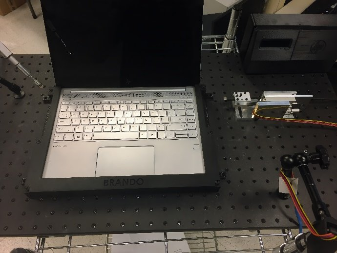
Gen 01 · 2018$4,100
Original Custom Cradle
Steel breadboard, fully machined components, single-laptop custom cradle. The starting point.
I design and build automated test fixtures, custom motion-control hardware, and 3D-printed bots that put HP's laptops, docks, and accessories through tens of thousands of cycles — replacing manual testing with reliable, repeatable systems.
I'm a robotics engineer with a BSME from the University of Texas at Arlington, currently designing automated test hardware at HP Inc. in the Print and Personal Systems lab. My work sits at the intersection of mechanical design, electronics, and motion control — the unglamorous-but-essential layer that lets software teams ship hardware confidently.
Over the last seven years I've led the team's transition from manual to automated testing: drafting fixtures in SolidWorks, prototyping with HP's Multi Jet Fusion 3D printers, laying out the PCBs that drive each fixture, and writing the firmware that ties it all together. Along the way I've cut per-unit fixture costs by 93%, doubled lab capacity, and shipped a catalogue of bots that now run continuously across our test floors.
Before HP, I led the UT Arlington Mars Rover team to international competition, built solar-tracking streetlights for UTARI, and developed an autonomous ground vehicle using SLAM and dead-reckoning navigation.
A walk through the systems I've designed and shipped for HP's compatibility lab — from the first machined prototype to a fleet of servo-driven bots running thousands of unattended cycles every night.
The compatibility lab's test fixture went through four major iterations under my design ownership. Each generation refined what really mattered, stripped over-engineered components, replaced machined parts with off-the-shelf aluminum framing and in-house Multi Jet Fusion 3D prints, and ultimately produced a unit that costs 93% less while running the same — and in many cases more demanding — test routines.

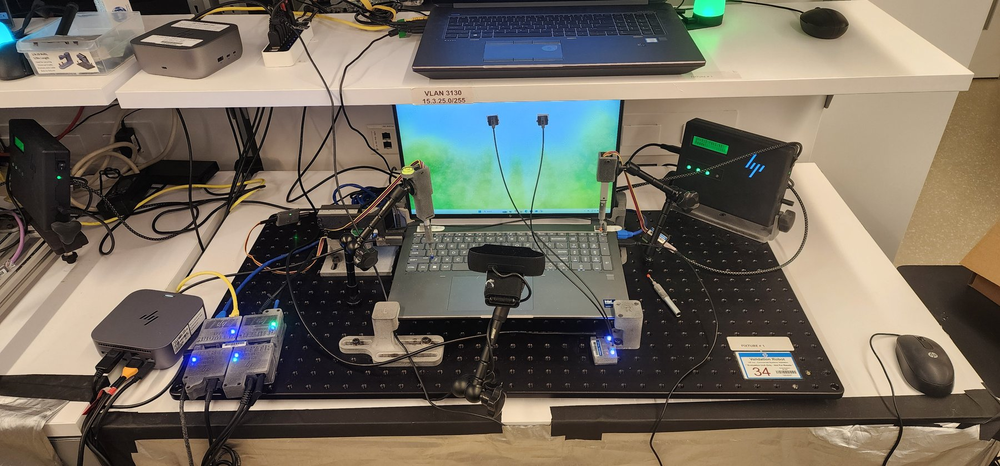
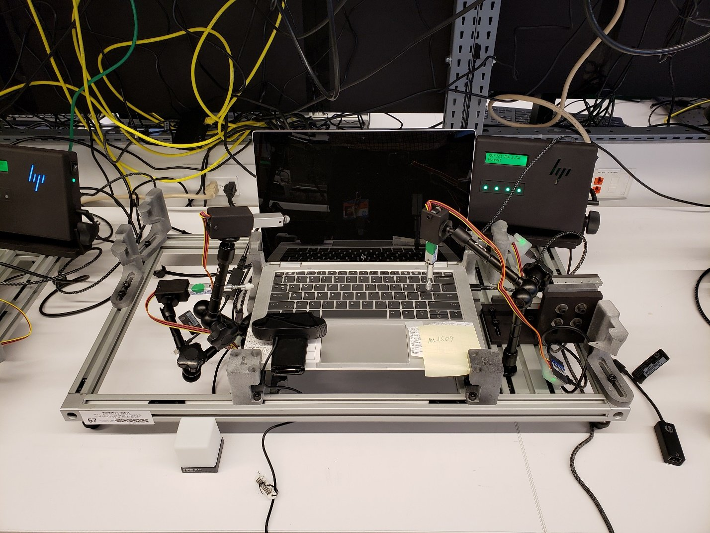
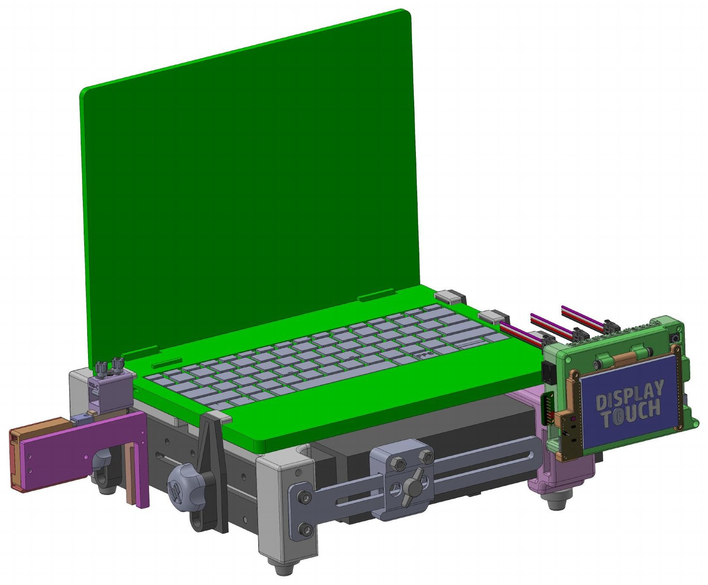
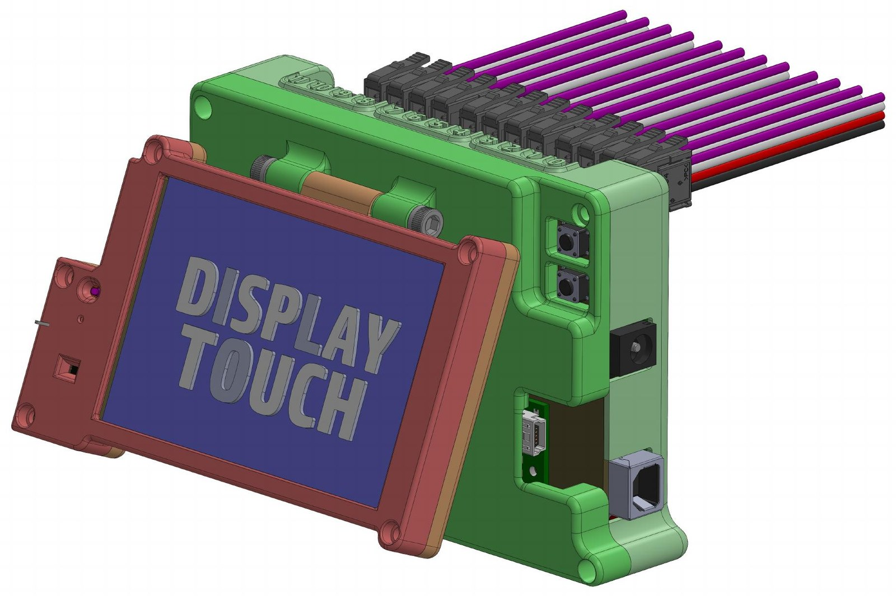
Mega II is our second-generation robotic controller. It drives up to 12 bots per fixture through dedicated terminal blocks and exposes a touchscreen UI so technicians can configure runs at the bench instead of tethering to a host PC. It's the command-and-control layer underneath most of the other projects on this page.
I owned the PCB layout and the mechanical enclosure design — the green MJF-printed housing, the integrated touchscreen mount, the actuator terminal arrangement, and the routing for cooling, power and I/O.
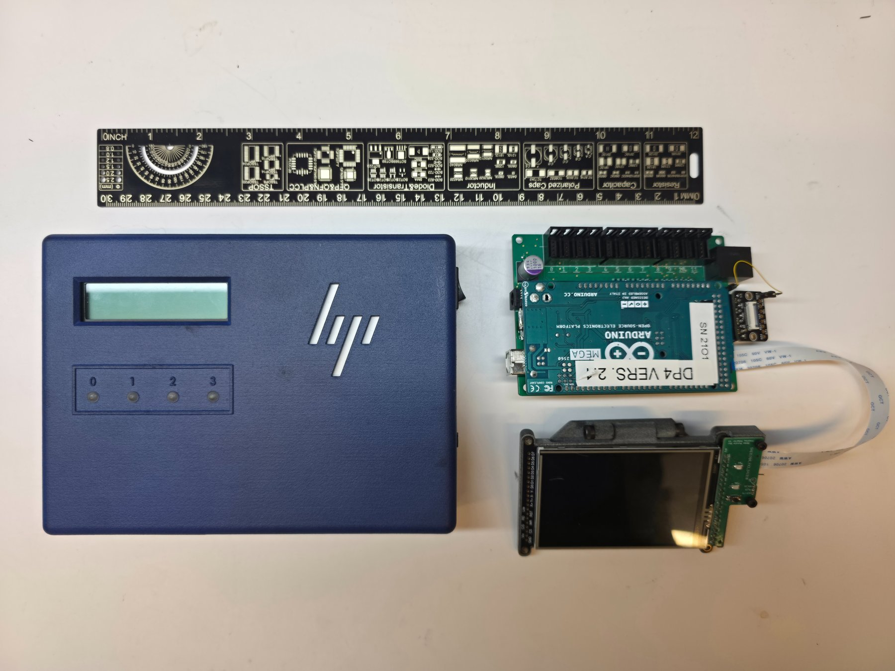
On the left, the 1st-generation controller in its blue HP-branded production housing — a 4-channel unit with an LCD readout and status LEDs that drove the early bots from 2017 onward. On the right, the 2nd-generation Mega II in prototype form: an Arduino Mega 2560 carrying a custom daughterboard with twelve actuator outputs and a separate touchscreen module that'll eventually live inside the green production housing shown above.
Same job, three times the channel count, a touchscreen UI in place of an LCD, and a single integrated PCB instead of stacked daughterboards.
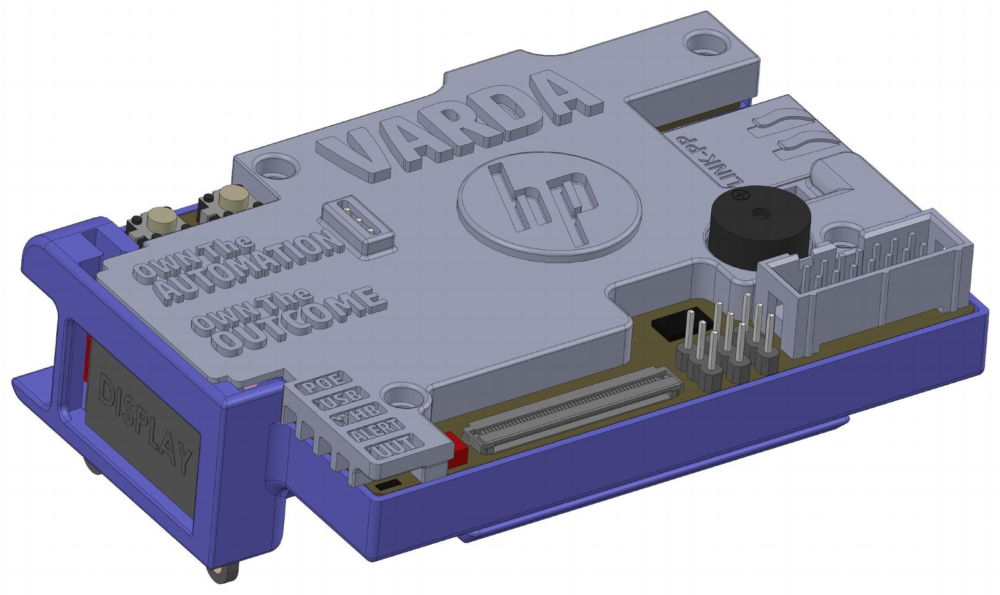
Varda is the team's software-validation harness — a compact RP2040 Pico 2 board that plugs into each unit-under-test's debug connector, monitors system state, and automatically issues a hardware reset whenever the UUT throws a fault like a blue-screen, hang or watchdog event. We currently have 250+ Varda boards deployed across the lab, supervising overnight soak tests without anyone walking the floor.
I owned the board layout and the housing design — including the molded HP logo, the "OWN THE AUTOMATION / OWN THE OUTCOME" tagline cut into the lid, the display window cutout and the tabbed slide-in chassis.
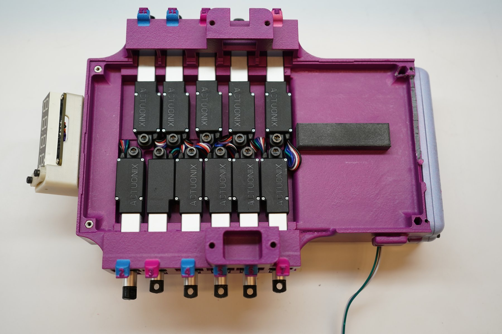
The Deep Purple program tests HP's docking stations the way they're actually used — by plugging things in, over and over, into every port simultaneously. The fixture houses a custom 12-channel control PCB driving a stack of Actuonix linear actuators, each carrying a colour-coded plug for a specific port type (USB-A, USB-C, DisplayPort, Ethernet). The signature magenta chassis is a single MJF-printed part.
Designing the dock fixtures filled a gap on our team where no dedicated electrical engineer was available — I owned the PCB design, the mechanical chassis, and the actuator-to-port alignment.
A short clip showing the SolidWorks motion study of the plug-insertion mechanism alongside macro footage of the live fixture in action. Each cycle: extend, contact, hold, retract. Scaled across 12 channels per fixture, that's thousands of insertions per night, every night.
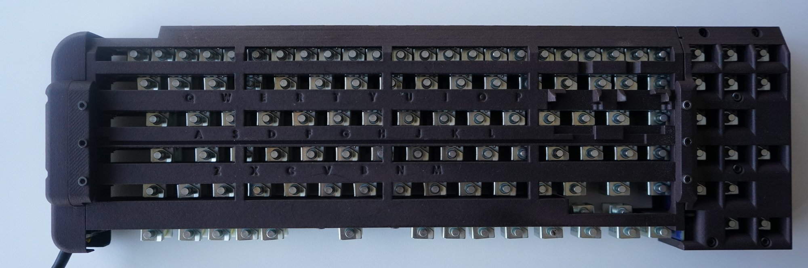
The Keyboard Bot mounts over a laptop and drives an array of solenoid actuators down onto the keys, simulating up to 130 unique keystrokes on command. It verifies keyboard behavior across power states, detects stuck or dead keys, and stress-tests new keyboard designs over hundreds of thousands of activations.
A clip from the V12 prototype running a typing-speed sweep. The bot cycles through different hold-times — 80 ms, 50 ms, 40 ms, 30 ms — printing a labelled line into Notepad on each pass, while alternating shift-keys to verify modifier behaviour. The staccato of solenoids you can almost hear through the screen is what thousands of overnight cycles look like.
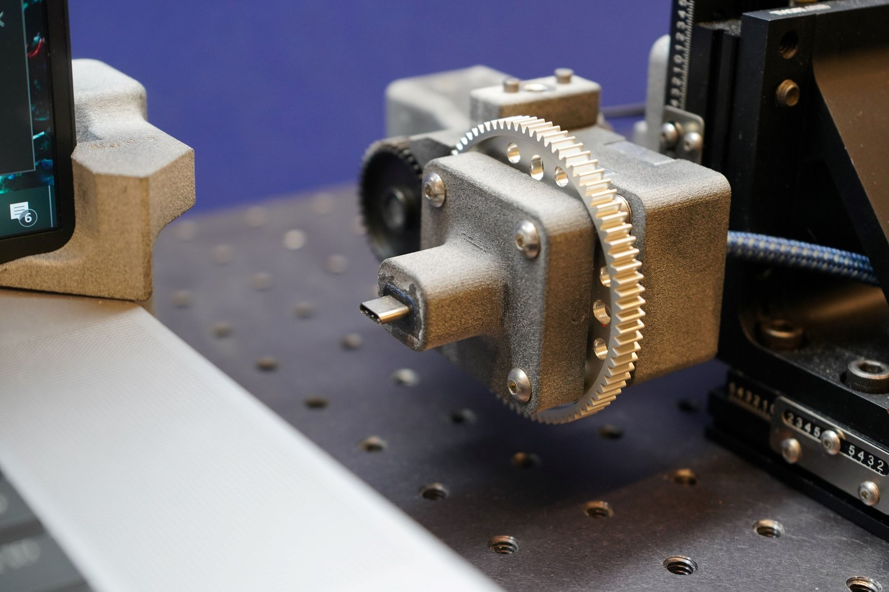
USB-C is reversible — and that reversibility is exactly what needs testing. The Flip Bot performs the entire plug / unplug / rotate-180° / re-plug cycle autonomously, allowing firmware teams to validate USB-C port behavior across both connector orientations for tens of thousands of cycles per build, fully unattended.
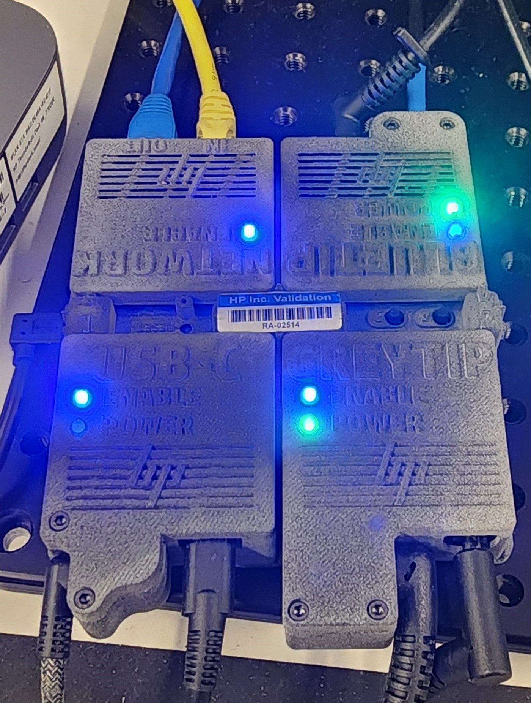
Each Low Power Switch is a self-contained MJF-printed module that gates a specific interface — Network, Bluetooth, USB-C, and Relay — independently from the host. The host can enable or disable each domain at will, which is what makes detailed power-state validation possible: simulating sleep, AC, DC, S0i3, modern-standby, and every weird transition in between, with the same fixture, repeatably.
They're visually small but functionally critical — most charging-IC and power-adapter validation across the lab runs through some combination of these four bots.
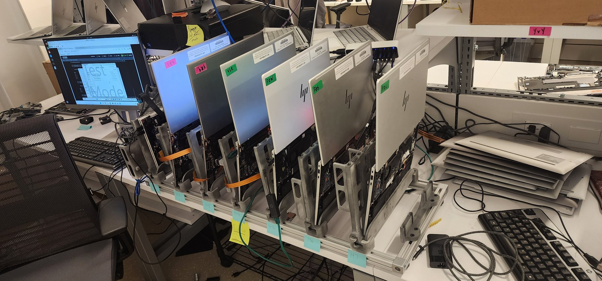
The Polaris Triage Fixture is a vertical-stacking frame for developer-stage units — laptops in mid-disassembly, exposed motherboards, the messy iterative work of bringing a new platform up. Instead of one bench per unit, it lets a single technician supervise up to 10 devices on the same fixture, all running test routines in parallel. Pure space utilization, but the pay-off was enormous: doubled lab capacity without a square inch more of bench space.
Each bot replaces a manual test step. Together — orchestrated by Mega II and watched by Varda — they let one technician supervise dozens of devices through thousands of overnight cycles.
Undergraduate and student-team projects from the University of Texas at Arlington — the work that shaped how I approach hardware design today.
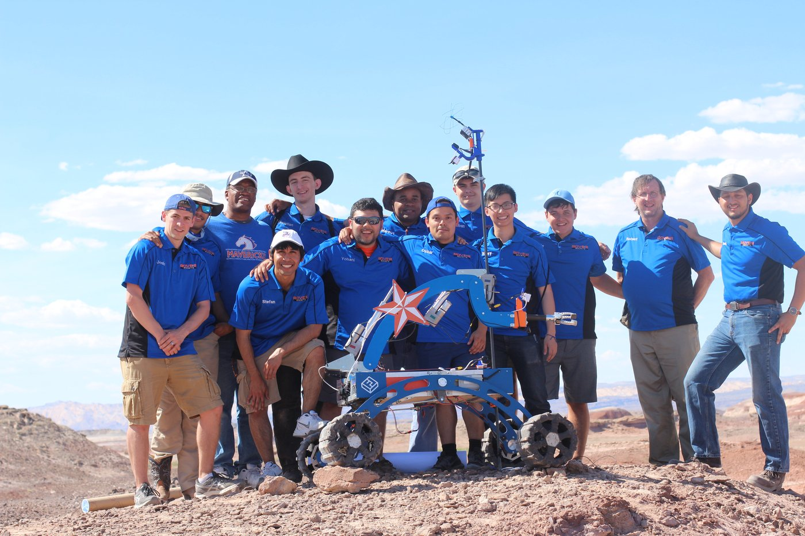
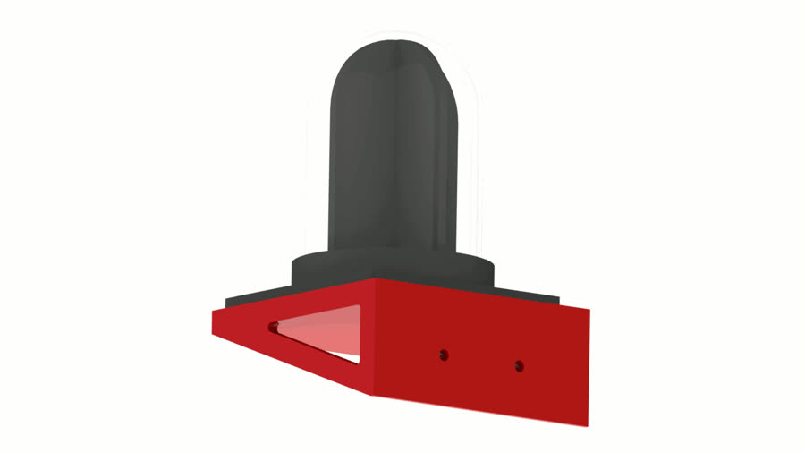
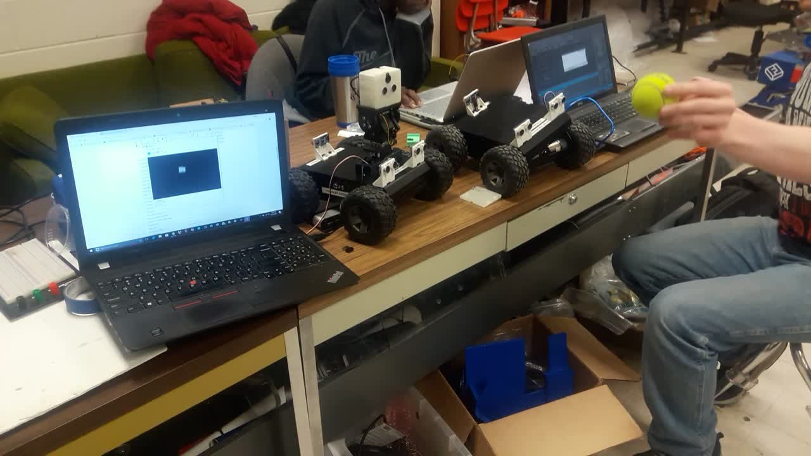
Outside the lab I'm a photographer and videographer — the same instinct for documenting how things work that drives the bot user-guides at HP shows up in landscape work from the Texas hill country to Pikes Peak.
I'm most interested in robotics, automated test systems, and product engineering problems where mechanical, electrical and software all have to play nicely together. The fastest way to reach me is email — Houston timezone, US Central.
Looking for the original 2018 portfolio? The version of this site I built right out of UTA is still live and fully functional.
View original site→